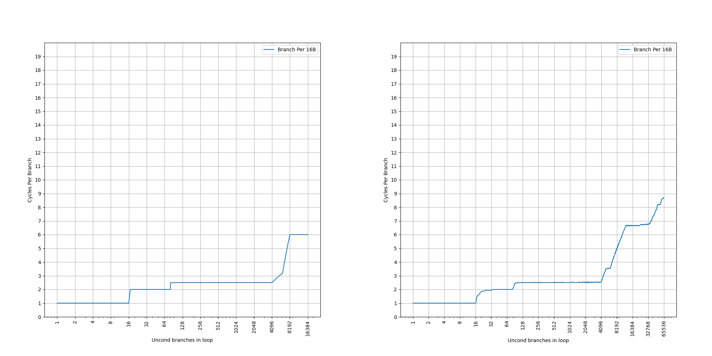
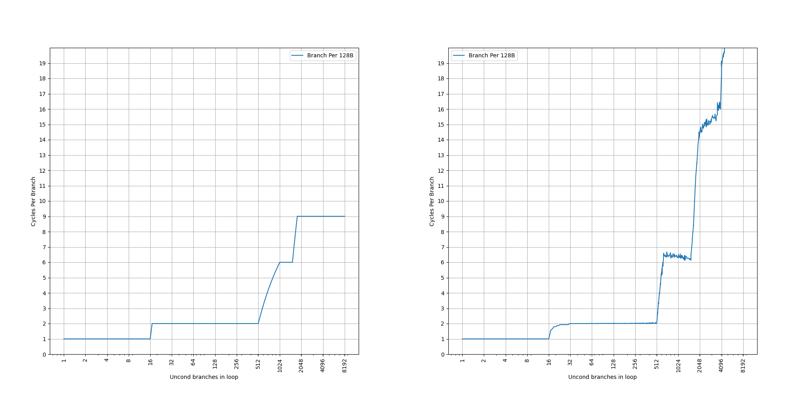

ARM Neoverse N1 (代号 Ares) 的 BTB 结构分析¶
背景¶
ARM Neoverse N1 是比较早的一代 ARM 服务器的处理器，它在很多地方都和 Cortex-A76 类似。它的 BTB 结构比较有意思，所以在这里对它的 BTB 做一些分析。
官方信息¶
首先收集了一些 ARM Neoverse N1 的 BTB 结构的官方信息：
- Arm Neoverse N2: Arm’s 2nd generation high performance infrastructure CPUs and system IPs 中对 Neoverse N1 的介绍：
- Branch Prediction Width: 8 instrs
- Nano BTB (0 cyc taken-branch bubble): 16 entry
- Main BTB: 6K entry
- The Arm Neoverse N1 Platform: Building Blocks for the Next-Gen Cloud-to-Edge Infrastructure SoC 的介绍：
- 6K entry Main BTB, 3 cycle access latency
- 64-entry Micro BTB
- 16-entry Nano BTB
- 4-way set associative 64KB L1 ICache
简单整理一下官方信息，大概有三级 BTB：
- 16-entry Nano BTB, 1 cycle latency (0 cycle bubble)
- 64-entry Micro BTB
- 6K-entry Main BTB, 3 cycle latency
但是很多细节是缺失的，因此下面结合微架构测试，进一步研究它的内部结构。
微架构测试¶
在之前的博客里，我们已经测试了各种处理器的 BTB，在这里也是一样的：按照一定的 stride 分布无条件直接分支，构成一个链条，然后测量 CPI。
stride=4B¶
首先是 stride=4B 的情况：

可以看到，图像上出现了三个比较显著的台阶：
- 第一个台阶到 16 条分支，CPI=1，对应了 16-entry 的 Nano BTB
- 第二个台阶到 80 条分支，CPI=2，其中
80=16+64，多出来的部分对应了 64-entry 的 Micro BTB - 第三个台阶到 8192 条分支，CPI=5，大于 Main BTB 的 3 cycle latency，说明此时没有命中 Main BTB，而是要等到取指和译码后，计算出正确的目的地址再回滚，导致了 5 cycle latency；8192 的性能下降原因还需要进一步研究，16384 的性能下降对应了 64KB 的 ICache，因为
4B*16384=64KB
那么 stride=4B 的情况下就遗留了两个问题：为什么没有命中 Main BTB；8192 处为什么出现了性能下降。
stride=8B¶
接下来观察 stride=8B 的情况：

可以看到，图像上出现了三个比较显著的台阶：
- 第一个台阶到 16 条分支，CPI=1，对应了 16-entry 的 Nano BTB，和之前一样
- 第二个台阶到 80 条分支，CPI=2，其中
80=16+64，多出来的部分对应了 64-entry 的 Micro BTB，和之前一样 - 第三个台阶到 4096 条分支，CPI=2.75，约等于 Main BTB 的 3 cycle latency，说明此时命中的是 Main BTB，但是它并没有达到宣称的 6144-entry 的 Main BTB 容量；8192 还有一个性能下降，这对应了 64KB 的 ICache：
8B*8192=64KB
相比 stride=4B，Nano BTB 和 Micro BTB 的行为没有变化；而 Main BTB 开始能够命中，这代表 Main BTB 在分支特别密集的情况下，会出现性能问题。
那么 stride=8B 的情况下遗留了两个问题：为什么 CPI=2.75 而不是 3？为什么只观察到了 4K 的 Main BTB 容量，而不是 6K？
stride=16B¶
继续观察 stride=16B 的情况：
可以看到，图像上出现了四个比较显著的台阶：
- 第一个台阶到 16 条分支，CPI=1，对应了 16-entry 的 Nano BTB，和之前一样
- 第二个台阶到 80 条分支，CPI=2，其中
80=16+64，多出来的部分对应了 64-entry 的 Micro BTB，和之前一样 - 第三个台阶到 4096 条分支，CPI=2.5，比 Main BTB 的 3 cycle latency 略小，但是大于 2，说明此时命中的是 Main BTB，此时遇到了 64KB ICache 的瓶颈：
4096*16B=64KB - 第四个台阶到 6144 条分支，CPI=3.5，比 Main BTB 的 3 cycle latency 略大，是因为 64KB ICache 出现了缺失，但这个时候终于显现了宣传的 Main BTB 的 6144 的容量
相比 stride=8B，Nano BTB 和 Micro BTB 的行为没有变化；Main BTB 的 6144 容量开始显现，并且出现地比 64KB ICache 更晚。
那么 stride=16B 的情况下遗留了一个问题：为什么出现了 CPI=2.5 的平台？
stride=32B¶
继续观察 stride=32B 的情况：

可以看到，图像上出现了三个比较显著的台阶：
- 第一个台阶到 16 条分支，CPI=1，对应了 16-entry 的 Nano BTB，和之前一样
- 第二个台阶到 2048 条分支，CPI=2，此时遇到了 64KB ICache 的瓶颈：
2048*32B=64KB，但是这个时候已经超出了 Micro BTB 的容量，而 Main BTB 有 3 cycle 的 latency，为何还能保持 CPI=2 呢 - 第三个台阶到 6144 条分支，CPI=4，比 Main BTB 的 3 cycle latency 略大，是因为 64KB ICache 出现了缺失，显现的是宣传的 Main BTB 的 6144 的容量，更加说明第二个台阶内 Main BTB 是命中的
那么 stride=32B 的情况下遗留了一个问题：为什么在 Main BTB 的范围内出现了 CPI=2 的平台？
stride=64B¶
继续观察 stride=64B 的情况：

可以看到，图像上出现了三个比较显著的台阶：
- 第一个台阶到 16 条分支，CPI=1，对应了 16-entry 的 Nano BTB，和之前一样
- 第二个台阶到 1024 条分支，CPI=2，此时遇到了 64KB ICache 的瓶颈：
1024*64B=64KB，和之前一样 - 第三个台阶到 3122 条分支，CPI=6，比 Main BTB 的 3 cycle latency 大，是因为 64KB ICache 出现了缺失，此时 Main BTB 的容量砍半
stride=64B 相比 stride=32B 的 Main BTB 容量砍半，这是组相连的表现：如果 PC[5] 在组相连的 index 当中，那么当 stride=64B 时，PC[5] 恒等于 0，意味着只有一半的 set 可以被用到，那也就只有一半的容量了。
Nano BTB 和 Micro BTB 容量没有变小，意味着它们大概率是全相连的：这也和它们的大小相吻合。
那么 stride=64B 的情况下遗留的问题和 stride=32B 一样：为什么在 Main BTB 的范围内出现了 CPI=2 的平台？
stride=128B¶
继续观察 stride=128B 的情况：
可以看到，图像上出现了三个比较显著的台阶：
- 第一个台阶到 16 条分支，CPI=1，对应了 16-entry 的 Nano BTB，和之前一样
- 第二个台阶到 512 条分支，CPI=2，此时遇到了 64KB ICache 的瓶颈：
512*128B=64KB，和之前一样 - 第三个台阶到 1536 条分支，CPI=6.x，比 Main BTB 的 3 cycle latency 大，是因为 64KB ICache 出现了缺失，此时 Main BTB 的容量进一步砍半
stride=128B 相比 stride=64B 的 Main BTB 容量进一步砍半，也是组相连的表现，意味着 PC[6] 也在组相连的 idnex 当中，只有四分之一的 set 可以被用到。
那么 stride=128B 的情况下遗留的问题和 stride=32B 一样：为什么在 Main BTB 的范围内出现了 CPI=2 的平台？
小结¶
测试到这里就差不多了，更大的 stride 得到的也是类似的结果，总结一下前面的发现：
- Nano BTB 是 16-entry，1 cycle latency，不随着 stride 变化
- Micro BTB 是 64-entry，2 cycle latency，也不随着 stride 变化
- Main BTB 是 6K-entry，3 cycle latency，容量随着 stride 变化，大概率是 PC[n:5] 这一段被用于 index，使得 stride=64B 开始容量不断减半
- 64KB ICache 很多时候会比 Main BTB 更早成为瓶颈
也总结一下前面发现了各种没有解释的遗留问题：
- stride=4B 的情况下，Main BTB 没有像预期那样工作：解释见后
- stride=4B 的情况下，8192 条分支处出现了性能下降：暂无解释
- stride=8B 的情况下，只观察到 4096 的 Main BTB 容量，而不是 6144：解释见后
- stride=8B 的情况下，在 Main BTB 命中的范围内，CPI=2.75：解释见后
- stride=16B 的情况下，在 Main BTB 命中的范围内，CPI=2.5：解释见后
- stride=32B 或 64B 或 128B 的情况下，在 Main BTB 命中的范围内，CPI=2：解释见后
接下来尝试解析一下这些遗留问题背后的原理。部分遗留问题，并没有被解释出来，欢迎读者提出猜想。
解析遗留问题¶
stride=4B 的情况下，Main BTB 没有像预期那样工作¶
对于这种类似 Cache 的结构，当它看起来总是没有命中的时候，其实就是每一个 Set 内要访问的数据超出了 Way，导致每次新访问的都会缺失。上面分析到，Main BTB 的 Index 大概是 PC[n:5] 这一段，那么一个对齐的 32B 范围内，分支指令都会被映射到同一个 set 内。当 stride=4B 的时候，对齐的 32B 范围内有 8 条指令；而 stride=8B 的时候，只有 4 条指令。8 条指令不行，4 条指令可以，暗示了中间跨越了 Way 的数量。
首先来回顾一下 Main BTB 的 6144-entry 是怎么来的：虽然它没说是几路组相连，但因为 6144 有一个 3 的因子，它不是二的幂次，所以一定是在 Way 数量上产生的。这就导致了至少这样几种可能：
- 3-way set associative, 2048 sets
- 6-way set associative, 1024 sets
- 12-way set associative, 512 sets
回顾前面的分析：4 条指令没有超过 Way 数量，8 条指令超过了，那么只能是上述可能里的 6-way set associative，1024 sets 的情况。
翻阅 Arm® Neoverse™ N1 Core Technical Reference Manual，它是这么说的：
L1 BTB data location encoding:
[31:24]: RAMID = 0x02[23:20]: Reserved[19:18]: Way[17:15]: Reserved[14:5]: Index[14:5][4:0]: Reserved
它暗示了 L1 BTB（也就是 Main BTB）的 Index 是 PC[14:5]，这和我们之前的观察一致。这样算出来有 2^(14-5+1)=1024 个 set，和我们前面的 6-way set associative，1024 sets 的猜测是一致的。
但是，这时候又出现一个问题：[19:18] 只能记录两位的 Way 编号，也就是说不能超过 4 个 Way，但实际上有 6 个 Way。这似乎又出现了矛盾。
继续去阅读文档里对从 BTB 读出来的数据的描述：
L1 BTB cache format:
- Instruction Register 0 [63:0]: Data [63:0]
- Instruction Register 1 [17:0]: Data [81:64]
这暗示了给定一个 Index 和一个 Way，可以读出来 82 bit 的数据，这不太寻常：一个分支的信息，通常不需要这么多 bit 的数据。一个 BTB Entry，通常需要这些信息：
- valid
- branch type: conditional or unconditional, direct or indirect, call or return, etc.
- tag
- replacement policy
- part of target address
除非保存了完整的 target address 和 tag，是达不到 82 bit 这么多的。但是这样又显得很浪费，可能还有其他的可能写。
考虑到上面出现的两位的 Way 编号，并且有 3 的素数因子，只能是 3-way 组相连了。如果按 3-way 组相连，1024 个 set 来算，只有 3072 个 entry，距离 Main BTB 的容量 6144 个 entry 刚好只有一半。一个想法诞生了：如果一个 BTB entry 可以保存两个分支的信息呢？82 bit 正好是 2 的倍数，除以二是 41 bit，每个分支存 41 bit 的数据是比较合理的数据。这样，就可以推导出来，它 Main BTB 的组织方式是：
- Index: PC[14:5]，有 1024 个 set
- 3-Way 组相连
- 每个 Entry 是 82 bit，可以记录两条分支的信息
所以 BTB 的 Entry 怎么计算其实会比较复杂，到底是按实际的 Entry 数，还是按分支数，需要深入分析才能理解。
那么，为什么要把两条分支保存在一个 BTB Entry 里呢？Neoverse N1 并没有实现 two taken，似乎并没有放在一起的必要。而且虽然是 3-Way 组相连，匹配的时候还是 6-Way 的，那么这样做的好处是什么呢？
这时候就要提到很多处理器实现的一个优化了：大多数分支，它的目的地址距离它自己是很短的，即使考虑指令支持的最大范围，比如 AArch64 指令里面，B 指令的立即数是 26 位，B.cond 和 CBNZ 的立即数是 19 位，也比完整的虚拟地址空间小很多。针对多数的跳转距离比较短的分支，可以用一个更压缩的表示来保存，使得 BTB 可以保存更多的分支；同时，也保留针对跳转距离比较长的分支的支持。这和前面的这个设计就对上了：对于跳转距离短的分支，每 41 bit 可以保存一条分支的信息；对于跳转距离远的分支，再用 82 bit 来保存一条分支的信息。从另外一个角度来说，41 bit 也确实保存不下完整的虚拟地址，所以需要有一个方案给跳转距离远的分支兜底。
那么如果跳转距离比较远，Main BTB 的容量将会只有一半。感兴趣的读者可以设计实验来验证这一点。
小结：Main BTB 是 1024 set，3 way set associative 的结构，一共 3072 个 entry，每个 entry 可以保存两条分支，Index 是 PC[14:5]。stride=4B 的情况下，会出现一个 set 内 8 条分支的情况，无法在 3 个 entry 内放下，所以总是会出现缺失。
stride=8B 的情况下，只观察到 4096 的 Main BTB 容量，而不是 6144¶
在 stride=8B 的情况下，只观察到 4096 的 Main BTB 容量，实际上，用刚才分析的 Main BTB 结构，就可以分析出来。
首先，这个测试的构造方法是，给定分支数和 stride，按照这个 stride 在连续的一段虚拟地址上分布这些分支。以 stride=8B 为例，那么分支 i 的地址就是 8*i（实际情况下高位不是 0，但是所有的分支的高位是相同的，例如 0x100000000+8*i，但这不影响分析）。我们来观察一下前几个分支的信息：
- Branch 0: addr=0x00, index=0
- Branch 1: addr=0x08, index=0
- Branch 2: addr=0x10, index=0
- Branch 3: addr=0x18, index=0
- Branch 4: addr=0x20, index=1
可以看到从分支 5 开始，到了一个新的 set，第一个 set 内出现了 4 条分支，小于一个 set 内可以保存的最多 6 条分支。接下来看从分支 4096 开始的几个分支：
- Branch 4096: addr=0x8000, index=0
- Branch 4097: addr=0x8008, index=0
- Branch 4098: addr=0x8010, index=0
- Branch 4099: addr=0x8018, index=0
- Branch 4100: addr=0x8020, index=1
可以看到，index=0 这个 set 出现了 8 个 Branch：Branch 0-3 和 Branch 4096-4099，已经大于一个 set 内可以保存的最多 6 条分支。虽然 Main BTB 容量是 6144，但由于分支的排布方式，会首先在一个 set 里出现溢出。然后随着分支继续增加，产生溢出的 set 的比例逐渐上升，直到 8192 条分支的时候，每个 set 都完全溢出了。此时也恰好遇到了 64KB ICache 的瓶颈，如果 ICache 更大，应该会在 8192 的地方观察到一个平台，此时 Main BTB 完全缺失。
继续增加 stride，就没有了这个问题。以 stride=16B 为例子，Branch i 地址是 i*16，那么这些分支的地址是：
- Branch 0: addr=0x00, index=0
- Branch 1: addr=0x10, index=0
- Branch 2: addr=0x20, index=1
- Branch 3: addr=0x30, index=1
- ...
- Branch 2048: addr=0x8000, index=0
- Branch 2049: addr=0x8010, index=0
- Branch 2050: addr=0x8020, index=1
- Branch 2051: addr=0x8030, index=1
- ...
- Branch 4096: addr=0x10000, index=0
- Branch 4097: addr=0x10010, index=0
- Branch 4098: addr=0x10020, index=1
- Branch 4099: addr=0x10030, index=1
- ...
- Branch 6144: addr=0x18000, index=0
- Branch 6145: addr=0x18010, index=0
- Branch 6146: addr=0x18020, index=1
- Branch 6147: addr=0x18030, index=1
这个时候，每个 set 会以两个 branch 的粒度来增加，由于 6 是 2 的倍数，所以从 4096 开始，set 逐渐被填满，会等到 6144 条分支才会产生溢出。
小结：由于 Main BTB 的 Index 是 PC[14:5]，所以在 stride=8B 的情况下，每个 set 内以 4 个 branch 的粒度来增加，会有部分 set 已经出现溢出（只能存 6 个分支，但需要存 8 个分支），而另一部分 set 还没有满的情况（能存 6 个分支，但只存了 4 个分支）。这个拐点就是 4096 条分支。
stride=8B 的情况下，在 Main BTB 命中的范围内，CPI=2.75；stride=16B 的情况下，在 Main BTB 命中的范围内，CPI=2.5；stride=32B 或 64B 或 128B 的情况下，在 Main BTB 命中的范围内，CPI=2¶
前面提到，命中 Main BTB 的时候，其实 CPI 并不是 3，而是 2 到 3 之间的一个数，这似乎意味着 Main BTB 并非总是 3 周期提供一个预测。考虑到 Main BTB 容量比较大，很难单周期提供一个预测，猜测 Main BTB 可以两周期或者三周期提供一个预测。那么为什么会在不同的延迟下给出预测结果呢？
首先来分析一下 Main BTB 是如何做预测的：它首先会用传入的 VA 访问 SRAM，得到 3 个 82-bit 的数据，里面最多可以存 6 条分支指令的信息。得到这些数据以后，进行 tag 比较，筛选出其中匹配的部分。如果没有匹配的，或者只有一个匹配的分支，那都好说。但是，如果有多条匹配的分支呢？
例如，这是一个对齐的 32B 块，里面有 8 条 4 字节的指令：
0 4 8 12 16 20 24 28
+-----+-----+-----+-----+-----+-----+-----+-----+
| NOP | NOP | Br | NOP | NOP | NOP | Br | NOP |
+-----+-----+-----+-----+-----+-----+-----+-----+
假如要从地址 4 处开始执行，那么 Main BTB 应该要得到的是位于地址 8 的分支的信息；假如要从地址 16 处开始执行，那么 Main BTB 应该要得到的是位于地址 24 的分支的信息。为了实现这个事情，硬件上应该：
- 首先找到在同一个 32B 块内的所有分支：通过 tag 比对，找到这个 set 内的在该 32B 内的所有分支
- 接着，找到比输入的 VA 大于或者等于的第一个分支
这个逻辑是比较复杂的，首先要筛选出地址大于或等于输入的 VA 的分支，其次要找到其中 VA 最小的分支。一个思路是保证 BTB 里面的 VA 是排好序的，但是硬件上排序并不好做，而且即使排序了，也需要做类似二分搜索的事情。另一个思路就是不管顺序，用组合逻辑把所有可能性都考虑到，计算出要找的分支。
但是这个组合逻辑比较复杂，本质上就是一个 filter+min 操作，需要比较大的延迟。三个周期能做下来，但是两个周期内，就做不下这么复杂的组合逻辑了。那怎么办呢？
观察一下 CPI 比 3 小的情况：
- stride=8B 的 CPI=2.75
- stride=16B 的 CPI=2.5
- stride=32B 或 64B 或 128B 的 CPI=2
可以看到，随着 stride 增加，CPI 逐渐减少，到 stride=32B 的时候，能够稳定地达到 CPI=2 的情况。设想 Main BTB 有一个 2 周期出结果的 fast path，那么它此时可以稳定地触发；而 stride=16B 只有一半的时候可以触发 fast path：0.5*2+0.5*3=2.5；stride=8B 只有四分之一的时候可以触发 fast path：0.25*2+0.75*3=2.75。这样这些 CPI 都说得通了，其实就是有多大的概率能够触发 fast path。那么 fast path 生效的比例是：
- stride=8B 有四分之一的概率走 fast path
- stride=16B 有二分之一的概率走 fast path
- stride=32B 或 64B 或 128B 一定可以走 fast path
此时你可能已经发现了一些规律：32/4=8，然后 32/2=16。也就是说，当对齐的 32B 块里，有四条分支的时候，平均只有一条分支可以走 fast path；有两条分支的时候，平均也是一条分支可以走 fast path；只有一条分支的时候，它总是可以走 fast path。
再回想一下前面的匹配逻辑：
- 找到该 32B 块内所有的分支：这一步免不了
- 找到大于或等于输入 VA 地址的所有分支：这一步也免不了
- 找到第一个满足要求的分支：如果只有一条分支，那就不用寻找最小值了，这就是 fast path 的条件
这就解释了前面的现象：当 stride=8B 的时候，对齐的 32B 块内部是：
0 4 8 12 16 20 24 28
+-----+-----+-----+-----+-----+-----+-----+-----+
| Br | NOP | Br | NOP | Br | NOP | Br | NOP |
+-----+-----+-----+-----+-----+-----+-----+-----+
分支预测的时候，用的地址分别是 0、8、16 和 24。当用 0、8 和 16 的输入 VA 查询的时候，分别能找到 4、3 和 2 条 VA 大于或等于输入 VA 的分支。只有在用 24 的输入 VA 查询的时候，只能找到一条分支，不需要再求 min。
stride=16B 的情况类似，在预测第二条分支的时候，只有一条分支满足要求，可以走 fast path。
stride=32B 或更大的时候，对齐的 32B 块内都只有一条分支，满足走 fast path 的条件。
这就解释了前面看到的各种奇怪的 CPI 现象。
那么，为什么只有 Main BTB 会出现这种现象呢，理论上来说，Nano BTB 和 Micro BTB 也可以做类似的优化？这就涉及到了 BTB 的不同的组织方式：
- 一种是 Main BTB 这种，每条分支只保存一份，那么为了找到某个 VA 开始的第一条分支，就需要把满足要求的分支都找出来，再寻找地址最小的那一个；具体实现上，也有两种情况：
- 对于每个可能出现分支指令的地址，都进行一次 BTB 查询（这种结构叫 Instruction BTB）
- 对于每个对齐的块，记录这个块内的有限条分支的信息（这种结构叫 Region BTB），Main BTB 采用的就是这种，每个对齐的 32B 块内最多保存六条分支
- 另一种结构，则是直接记录从某个 VA 开始的第一条分支，即给定 VA，查询 BTB 后，匹配到的 entry 里记录的就是从这个 VA 开始的第一条分支（这种结构叫做 Block BTB）；这样一条分支可能会出现在多个 entry 内，此时就不会涉及到上面所述的 fast path 优化
那么猜测 Nano BTB 和 Micro BTB 采用了 Block BTB 的方法，或者因为延迟本身就足够低，即使可以做 fast path，也没有引入 fast path 优化。
详细的 BTB 设计分析，可以参考 浅谈乱序执行 CPU（三：前端） 的相关内容。
小结：Main BTB 可以在 2 或 3 周期提供预测，其中 2 周期预测的条件是，只找到一条 VA 大于或等于输入 VA 的分支，此时可以跳过求 min 的组合逻辑，在第二个周期给出预测。
模拟¶
既然已经知道了它的 BTB 结构，就写了一段程序来模拟它的工作过程：
// Cortex-A76/Neoverse-N1 BTB model
// 16-entry Nano BTB, fully associative, 1 cycle latency.
// 64-entry Micro BTB, fully associative, 2 cycle latency.
// 3072-entry Main BTB, 3-way set associative, 2-3 cycle latency, each entry at
// most 2 branches, index PC[14:5].
#include <cassert>
#include <set>
#include <stdint.h>
#include <stdio.h>
#include <utility>
#include <vector>
struct BTBEntry {
bool valid;
uint64_t pc;
uint64_t target;
};
typedef BTBEntry NanoBTBEntry;
typedef BTBEntry MicroBTBEntry;
typedef BTBEntry MainBTBEntry;
struct BTB {
NanoBTBEntry nanoBTB[16];
MicroBTBEntry microBTB[64];
// pretend as 6-way
MainBTBEntry mainBTB[1024][6];
// return latency
// use pc to predict a branch at pc, i.e. pva = pc
int match(uint64_t pc, uint64_t target) {
int result = 5; // miss penalty
// Nano BTB at P1
for (int i = 0; i < 16; i++) {
if (nanoBTB[i].pc == pc && nanoBTB[i].target == target) {
// Nano BTB hit
// LRU: move it to head
for (int j = i; j > 0; j--) {
nanoBTB[j] = nanoBTB[j - 1];
}
nanoBTB[0].pc = pc;
nanoBTB[0].target = target;
result = 1;
goto main_btb;
}
}
// Nano BTB miss, check Micro BTB at P1
// like victim cache
for (int i = 0; i < 64; i++) {
if (microBTB[i].pc == pc && microBTB[i].target == target) {
// Micro BTB hit
// Move to Nano BTB
for (int j = i; j > 0; j--) {
microBTB[j] = microBTB[j - 1];
}
microBTB[0].pc = nanoBTB[16 - 1].pc;
microBTB[0].target = nanoBTB[16 - 1].target;
for (int j = 16 - 1; j > 0; j--) {
nanoBTB[j] = nanoBTB[j - 1];
}
nanoBTB[0].pc = pc;
nanoBTB[0].target = target;
result = 2;
goto main_btb;
}
}
// Micro BTB miss
for (int j = 64 - 1; j > 0; j--) {
microBTB[j] = microBTB[j - 1];
}
microBTB[0].pc = nanoBTB[16 - 1].pc;
microBTB[0].target = nanoBTB[16 - 1].target;
for (int j = 16 - 1; j > 0; j--) {
nanoBTB[j] = nanoBTB[j - 1];
}
nanoBTB[0].pc = pc;
nanoBTB[0].target = target;
main_btb:
// check Main BTB
// PC[4:2]
uint64_t offset = pc & 0x1c;
// PC[14:5]
uint64_t index = (pc & 0x7fe0) >> 5;
assert(index < 1024);
// PC[n:15]
uint64_t tag = pc >> 15;
uint64_t min_offset = -1;
int min_i = -1;
int matches = 0;
for (int i = 0; i < 6; i++) {
// find matches
if ((mainBTB[index][i].pc >> 15) == tag && mainBTB[index][i].valid) {
// check offset
if ((mainBTB[index][i].pc & 0x1c) >= offset) {
if (min_i == -1) {
min_i = i;
min_offset = mainBTB[index][i].pc & 0x1c;
} else if ((mainBTB[index][i].pc & 0x1c) < min_offset) {
min_i = i;
min_offset = mainBTB[index][i].pc & 0x1c;
}
matches++;
}
}
}
// hit
if (min_offset == offset) {
if (matches != 0) {
// LRU
MainBTBEntry temp = mainBTB[index][min_i];
for (int i = min_i; i > 0; i--) {
mainBTB[index][i] = mainBTB[index][i - 1];
}
mainBTB[index][0] = temp;
}
if (matches == 1) {
// fast path
if (result == 5) {
result = 2;
goto end;
}
} else if (matches > 1) {
// slow path
if (result == 5) {
result = 3;
goto end;
}
}
}
// miss
for (int i = 6 - 1; i > 0; i--) {
mainBTB[index][i] = mainBTB[index][i - 1];
}
mainBTB[index][0].pc = pc;
mainBTB[index][0].target = target;
mainBTB[index][0].valid = true;
end:
// BTB miss
return result;
}
};
int main() {
FILE *fp = fopen("btb_size.csv", "w");
int min_size = 2;
int max_size = 8192;
int max_product = 1048576;
std::vector<int> mults = {1, 3, 5, 7, 9, 11, 13, 15, 17, 19,
21, 23, 25, 27, 29, 31, 33, 35, 37, 39};
fprintf(fp, "pattern,size,stride,min,avg,max\n");
for (int stride = 4; stride <= 128; stride *= 2) {
std::set<int> sizes;
for (uint64_t size_base = min_size; size_base <= max_product / stride;
size_base *= 2) {
for (uint64_t mult : mults) {
for (uint64_t size = size_base * mult - 1;
size <= size_base * mult + 1 && size * stride <= max_product &&
size <= max_size;
size++) {
sizes.insert(size);
}
}
}
for (int size : sizes) {
BTB btb;
memset(&btb, 0, sizeof(btb));
int cycles = 0;
int branch_count = 1000 * size;
// warmup
for (int i = 0; i < branch_count; i++) {
uint64_t pc = ((i % size) * stride);
uint64_t target = (((i + 1) % size) * stride);
btb.match(pc, target);
}
// test
for (int i = 0; i < branch_count; i++) {
uint64_t pc = ((i % size) * stride);
uint64_t target = (((i + 1) % size) * stride);
cycles += btb.match(pc, target);
}
float cpi = (float)cycles / branch_count;
fprintf(fp, "0,%d,%d,%.2f,%.2f,%.2f\n", size, stride, cpi, cpi, cpi);
fflush(fp);
}
}
return 0;
}
这个模型只评估了 BTB 的性能影响，没有考虑 ICache。下面是模拟和实际的对比图，左边是模拟，右边是实际：
stride=4B：

stride=8B：

stride=16B：

stride=32B：

stride=64B：

stride=128B：

可以看到模型和实际的表现是非常一致的。
总结¶
最后总结一下 Neoverse N1 的 BTB：
- 16-entry Nano BTB, fully associative, 1 cycle latency
- 64-entry Micro BTB, fully associative, 2 cycle latency
- 3072-entry(6144 branches) Main BTB, 3-way(6-branch-way) set associative, 2-3 cycle latency, each entry at most 2 branches, index PC[14:5]